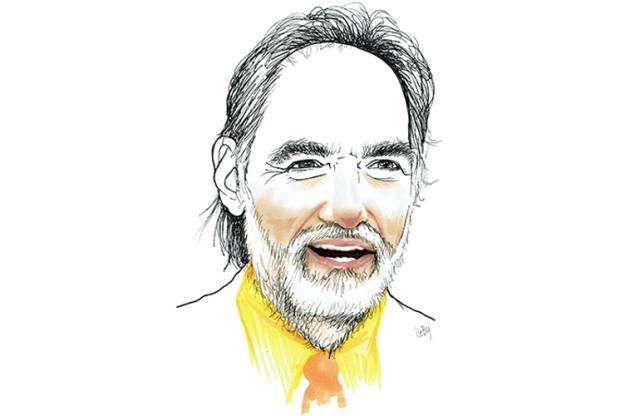

收录于合集
文献来源： “Understanding Process Tracing.” PS: Political Science and Politics 44, No. 4 (Oct 2011): 823-30. With 2019 Addendum.
作者简介： David Collier，加州大学伯克利分校政治学系教授，本科就读于哈佛大学，并在芝加哥大学取得硕士及博士学位。他的主要研究兴趣为比较政治学、拉丁美洲研究以及定性研究方法。

过程追踪是定性分析的一个基本工具，作者在文章中将其定义为根据研究问题和假设来对诊断性证据（diagnostic evidence）进行系统的考察。过程追踪可以同时有助于描述政治和社会现象，以及评估因果关系。这种方法经常被用作案例内分析，但是它并没有被很好地理解和应用，相比于定量分析而言，也缺乏如何教会研究者使用它的方法。这两点不足促使作者撰写这篇文章，以求能为理解、应用和教授过程追踪提供一个新的框架。
过程追踪的特点及作用
作者认为，过程追踪的独特之处体现在以下三个方面：1.因果过程观察（causal-process observations, 简称CPO）是与数据集合观察（date-set overvations，DSOs）相对的，它凸显了定性研究的经验基础与定量分析中数据矩阵的差别。作者认为过程追踪和因果过程观察实际上是同一种方法，为避免引起歧义，他在文中统一使用了过程追踪这一说法。2. 细致的描述是过程追踪的基础。3. 过程追踪特别关注自变量、因变量和中介变量出现的顺序。
过程追踪对个案的详细考察能使其有助于实现许多研究目标，包括：1. 识别异常的政治和社会现象并对其进行系统地描述。2. 评估之前的假设，发现新的假设并对其中的因果关系进行检验。3. 深入了解因果机制。4. 提供了解决研究设计中存在的互为因果和选择性偏差的另一种方式，有助于定量分析。5.也有助于加强小样本案例研究设计中的因果推论，因为小样本案例的研究设计多以案例之间的比较为基础，但跨案例比较中的因果推论需要通过案例内的分析加以补充。
如何识别诊断性证据？
作者认为这主要取决于研究者先前的知识积累。在沃尔兹的基础上，他区分了4种相互关联的知识类型。1. 概念框架：是关于如何使概念变得可操作化的普遍知识，通常用反事实的方法来分析。2. 反复出现的经验规律。指的是两种或两种以上现象之间的关系的确定模式。3. 理论A：建立在一些反复出现且相互联系的经验规律之上，是深入了解某一特定行为或现象的视角。4.理论B：不仅包括理论A，还对这些经验规律进行解释，因此也可被称为解释模型。
作者指出，有些研究者具备清晰而准确的先前知识来制定研究计划，而有些研究则需要参考更广泛的文献才能了解其理论背景。不幸的是，研究者可能会夸大其研究发现与先前知识之间的一致性，让人很难确定其理论起点在哪。这就需要一些侦探性工作，这类工作常见于评估诊断性证据。在此背景下，作者进一步考察了过程追踪对描述性推论和因果推论的贡献。
过程追踪对描述性推论的贡献
作为因果推论的工具，过程追踪聚焦于沿着时间顺序展开的事件。但是，如果无法充分地描述在某个时间点上的事件或者情形，要抓住这种展开是不可能的。所以，过程追踪里的描述并不是从观察变化或次序开始，而是对一系列特定时刻的快照（snapshot）。对此，作者举了2个例子，一个是Tannenwald对核禁忌的研究，二是Lerner对土耳其乡村现代化的研究。前者主要依靠各种一手和二手素材，后者主要依赖于田野调查中的访谈。除此之外，Tannenwald研究中用过程追踪描述的现象是自变量，而核禁忌是他为美国二战后不使用核武器提供的假设性解释，同时他也关注了另外的替代性解释。反过来，在Lerner的研究中，用过程追踪描述的乡村现代化是因变量。作者认为，这2个例子共同表明了定性研究者应该承认过程追踪中的描述有时候需要依靠定量数据，定量与定性之间的界限不是严格的。另一种形式的描述则基于反事实的基础之上，例如福尔摩斯故事集中的Silver Blaze（“白额闪电”）一案。在该故事中，主要的问题是解释谁是谋害死者的杀手。其关注点在一个单一的、不可被拆分的事件上，描述则主要是将给定变量的观察数值与反事实推测下可能出现但未出现的数值之间进行对比。
过程追踪对因果推论的贡献：4种经验测试
将过程追踪应用于因果推论的基本思路可以用4种经验测试的形式来概括。作者在此借用了Van Evera和Bennett提出的方法，以诊断性证据（即线索）是否是接受假设中因果推论的必要和/或充分条件来将测试划分成4类。分别是风中稻草型测试、环型测试、冒烟手枪型测试和双重决定型测试。
风中稻草型测试：（线索）不是证实因果推论的充分条件和必要条件。如果通过测试的话，只能确定假设中因果变量之间的相关性，而不能证实该假设，能略微地削弱其他替代性假设。未通过测试也无法排除假设，只能稍微削弱它，能稍微地增强其他替代性假设的效力。
环型测试：（线索）是证实因果推论的必要条件。如果通过测试的话，只能确定假设中因果变量之间的相关性，不能证实该假设，能稍微地削弱其他替代性假设。若未通过测试则能排除该假设，同时能略微地增强其他替代性假设的效力。
冒烟手枪型测试：（线索）是确定因果推论的充分条件。如果通过测试的话，可以证实假设，并极大地削弱其他替代性假设。未通过测试也无法排除假设，只能稍微削弱它，能稍微地增强其他替代性假设的效力。
双重决定型测试：（线索）是确定因果推论的充分必要条件。如果通过测试的话，可以证实假设并排除其他的替代性假设，如果未能通过测试的话，则该假设被排除，而其他替代性假设的效力则被大幅度增强。
作者认为在进行测试之前，需要注意以下几点：首先，具体明确的假设对于选择和解释证据而言是必不可少的，背景知识是至关重要的。其次，4种测试之间的区别没有那么严格。是否将某一证据视为某一类测试的基础取决于研究者先前的知识和研究的假设。最后，对哪种测试适用于某一特定的证据的判断包括不同的假定（assumption）和诠释（interpretation）。例如，如果研究者对某一给定事件作出了较弱的假定，即认为它是巧合，那么他们应该会更加谨慎。或者说，根据先前的知识，他们作出了较强的假定，认为给定的时间不是巧合，那么他们可能会得出一个不同的结论。
总结
实际上，定性分析和定量分析都很难做好，诸如过程追踪等定性分析工具可以克服一些定量分析中的挑战，但是它自身也存在问题。比如，哪一种因果推论的测试是合适的？是否有遗漏变量？在给定的研究里，研究者如何开始进行过程追踪？熟练自如地应用四种类型的测试并不是那么容易。对此，作者的建议是先好好理清事件发生的顺序，再进行下一步的操作。
附:
***案例分析：“白额闪电”
作者以福尔摩斯探案小说中的故事《白额闪电》（Silver Blaze）讨论了如何应用上述4种过程追踪的测试，故事的中心问题是寻找和解释杀害Straker的杀手以及马的失踪（重点是找凶手），作者将用来进行测试的假设分为自变量、因变量、干扰变量这三类。其中，线索就是之前所说的因果过程观察（CPO）。
1. 风中稻草型测试
除前文提到的以外，作者指出这种测试对研究者自身所具有的知识以及做出的假定要求最少。但是它能对假设进行初步的检验，其价值应当被肯定。尤其是当一个给定的假设通过了多个风中稻草型检验时，假设的可信度就增强了。举例：
**
**
2. 环型测试
相比于风中稻草型测试，环型测试在线索和假设之间进行的推论更严格
**
**
3. 冒烟手枪测试
**
**
4. 双重决定型测试
单一的测试很难为证实某一假设提供充分且必要条件，可以通过将不同类型的测试结合起来实现。一共有3个嫌疑人，辛普森、死者和马。作者通过环型测试排除了辛普森和死者自己作为凶手的嫌疑，同时马作为嫌疑人的假设通过了4个风中稻草型测试，其中一个还可能是冒烟手枪式测试，在其余嫌疑人都被排除的情况下，可以确定马是凶手。
5. 因果顺序框架：附加结果的测试
作者在最后指出，还有一种测试是James Mahoney所说的因果顺序框架。Mahoney提出了附加结果的概念，指的是某个结果不是主要因果顺序中的一部分，但是有助于因果推论。影响一个因变量的自变量可能会顺带产生其他的结果。考察这类附加的结果能进一步证明因果推论。
编译：施 榕
审读：释启鹏
编辑：吴温泉


政文观止
微信扫一扫赞赏作者 __赞赏
已喜欢，对作者说句悄悄话
取消 __
发送给作者
发送
最多40字，当前共字
上一页 1/3 下一页
长按二维码向我转账
受苹果公司新规定影响，微信 iOS 版的赞赏功能被关闭，可通过二维码转账支持公众号。